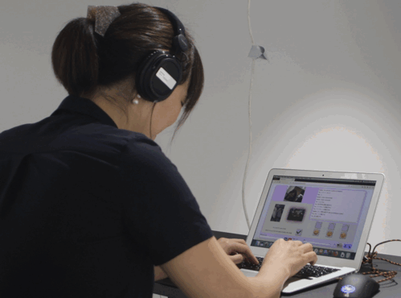

Motivation letter: TEI Studio Design for Playfulness Workshop
About me
Hi! My name is Avner Peled. I am a doctoral student at the Aalto Media Lab, Finland, and a creative technology consultant for the New York Times (based in Finland). My research in Aalto investigates the use of soft telerobots as avatars that facilitate communication, contact, and conflict resolution between groups. In my Master’s thesis (Peled 2019), I produced a pneumatic silicone-based telerobot named HITODAMA (Japanese for human spirit). HITODAMA is operated via a web interface and has a variety of expressive and mediating functions (Fig. 1). I have also conducted soft robotic workshops and I am open-sourcing and documenting all of my research.
  Figure 1: HITODAMA operation and interaction.
Figure 1: HITODAMA operation and interaction.
Intereset in workshop
In my doctoral studies, I am looking at how contact through telerobots could have a potential political impact (Peled, Leinonen, and Hasler 2020). Recently, I found myself returning to the more traditional form of political puppet theaters.
Telerobotics could create an even more empowering and borderless form
of political theater, where the puppeteer could be located anywhere
outside the theater, even in a different country (See inspiration in Fig. 2 Jwu-Sheng Hu, Jyun-Ji Wang, and Guan-Qun Sun 2008). Now, with the help of Emmi Pouta, I am exploring accessible manufacturing methods for textile-based double glove puppets:
A sensor on one end and a robot on the other. Initial experiments have
only just begun (Fig. 3), and I believe attending the TEI workshop could
infuse my ideas further, and I can share the knowledge I have gained so
far with others to create exciting cross-overs.
Thank you!
 Figure 2: Jwu-Sheng Hu et al: X-puppet.
Figure 2: Jwu-Sheng Hu et al: X-puppet.
 Figure 3: My first telerobot puppet experient.
Figure 3: My first telerobot puppet experient.